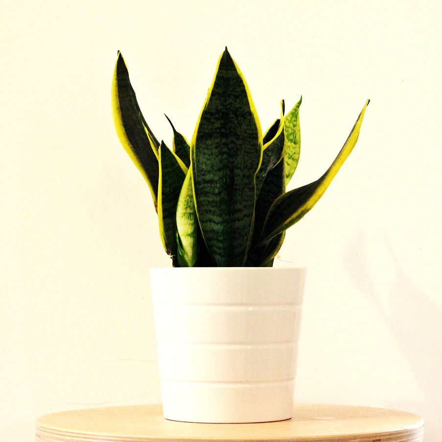
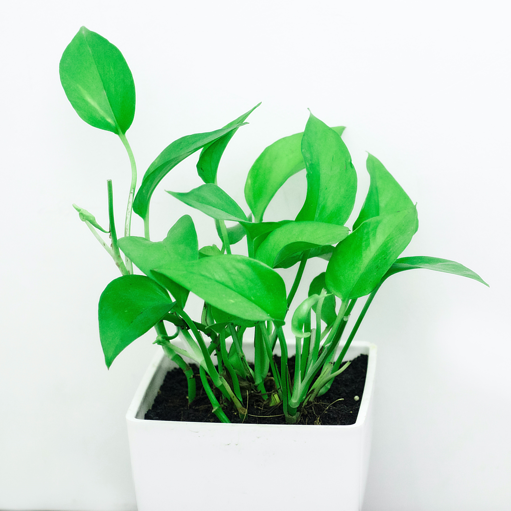
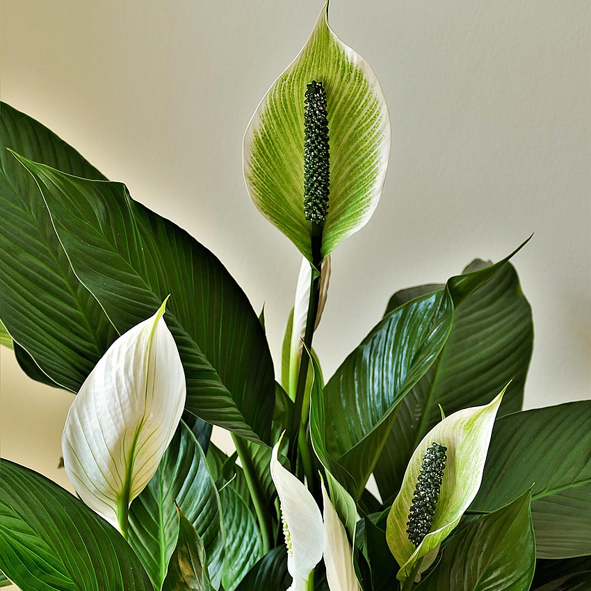

Welcome to Houseplants for Beginners
Here you will find a guide to three of the most popular houseplants that are suitable for beginners. Each is unique to different preferences, so be sure to look at all three and compare to find the best fit for you!
Snake Plant
Pothos
Peace Lily
For a longer list of good housplants for beginners, visit The Smart Garden Guide.